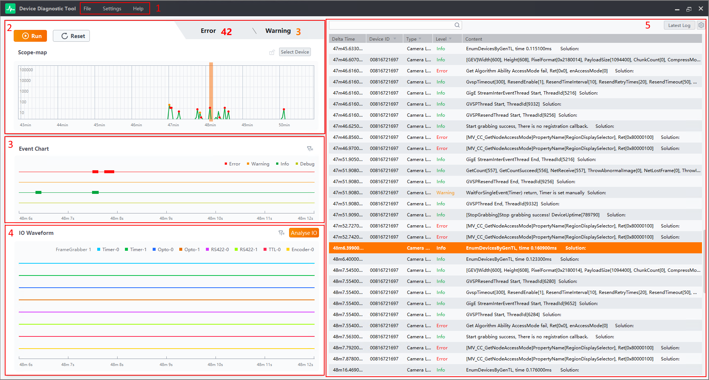

Device Diagnostic Tool (hereinafter simplified as "the Tool") can monitor the running status of devices in real time, and display the event overview, event chart, IO waveform, and log records.
|
Frame Grabber Type |
Frame Grabber Type Sorted by Interface Standard |
|---|---|
|
Image Frame Grabber |
Camera Link frame grabber, Coax Press frame grabber, GigE frame grabber, 10 GigE frame grabber, USB 3.0 frame grabber, and fiber port frame grabber. |
|
Embedded Frame Grabber |
GigE frame grabber and USB 3.0 frame grabber. |

Figure 1 Main Interface|
No. |
Name |
Description |
|---|---|---|
|
1 |
Menu Bar |
View the following functionalities.
|
|
2 |
Event Overview |
View the scope-map of frame grabber / camera events. For details, see Event Overview. |
|
3 |
Event Chart |
View the event chart of frame grabber / camera events diagnosed in the selected 6 seconds. For details, see Event Diagnostic. |
|
4 |
IO Waveform |
View the real-time status of IO pulses of frame grabbers / cameras and generate IO analysis. For details, see IO WaveForm Detection. |
|
5 |
Log Management |
View log and event information of frame grabbers / cameras in real time. For details, see Log Management. |